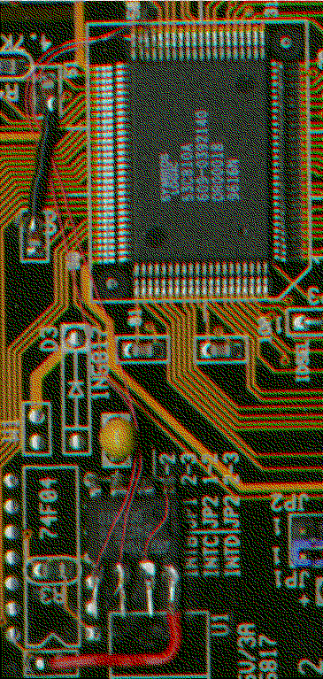

Previous
Next
TOC
Und das ganze von gerade eben nochmal im Detail:

Das SDMS-Bios hat
zwar nach dem modifi-
zieren des Hostadap-
ters ÅEer die ungÅE-
tigen Parameter im
EEPROM gemeckert und
das ganze dann an-
schlieflend neu ini-
tialisiert. Daran
sollte man sich also
beim ersten neustart
des Rechners nicht
wundern.
Die anschlieflende Meldung kˆnnte zum Bleistift so aussehen:
ncr53c8xx: at PCI bus 0, device 12, function 0
ncr53c8xx: 53c810 detected with Symbios NVRAM
ncr53c810-0: rev=0x01, base=0xe5000000, io_port=0xd800, irq=11
ncr53c810-0: Symbios format NVRAM, ID 7, Fast-10, Parity Checking
Und fertig ist das ganze!
Kapitel Der Asus SC200 SCSI Hostadapter, Seite 3